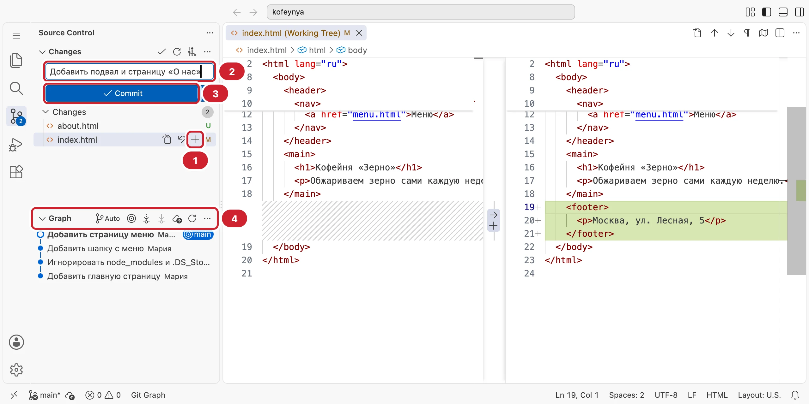
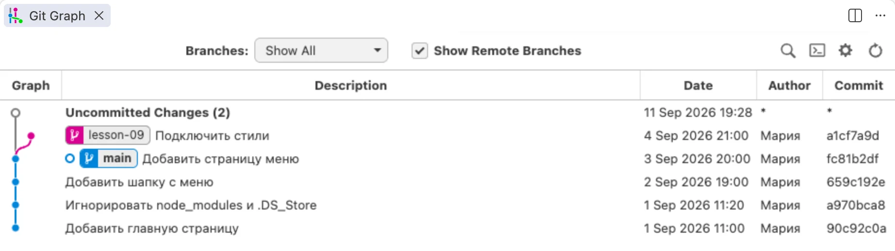
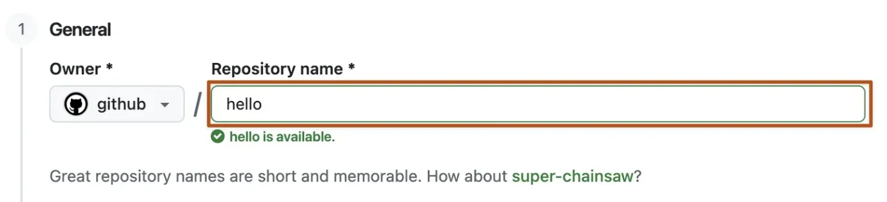
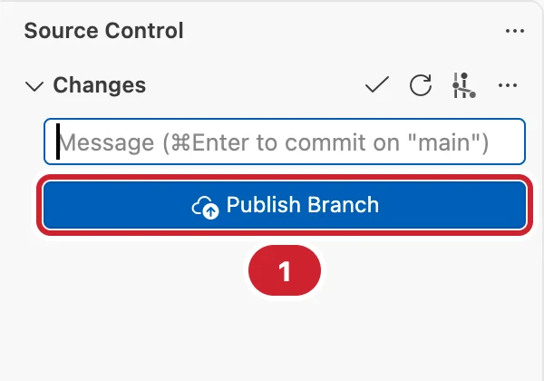
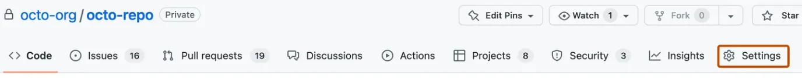
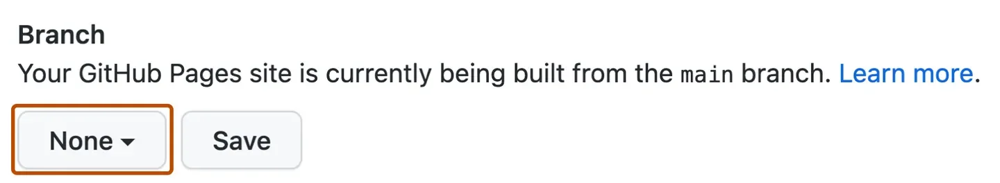
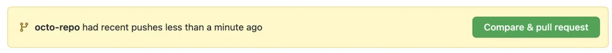

Git и GitHub
История изменений и публикация сайта
После урока вы сможете
- Сохранять историю проекта коммитами и читать её в Git Graph
- Опубликовать проект на GitHub и открыть сайт через GitHub Pages
- Сдавать домашку веткой и pull request, отвечать на комментарии ментора
Урок за минуту
- Git хранит историю проекта: каждый коммит — снимок файлов с сообщением, что поменяли
- Путь изменения: папка →
git add→ индекс →git commit→ история →git push→ GitHub .gitignore— список того, что в историю не попадает:node_modules,.DS_Store- Расширение Git Graph показывает историю, ветки и изменения каждого коммита картинкой
- Домашка сдаётся pull request: ветка с решением → запрос → комментарии ментора → слияние
Зачем нужен Git
Вы сделали страницу, она работала. Потом поменяли десять мест в CSS — и всё поехало. Какое из изменений сломало? Без истории остаётся гадать или копить папки site-final, site-final-2, site-точно-final.
Git ведёт историю за вас. Вы сами решаете, когда сделать снимок проекта — коммит, и подписываете его. Git запоминает, какие строки поменялись.
90c92c0
659c192
fc81b2d
a1cf7a9
Что это даёт:
- Вернуться назад. Сломали — откатили один коммит, а не вспоминаете, что меняли.
- Видеть, что поменялось. Git покажет каждую строку: была и стала.
- Работать вместе. Два человека правят один проект, Git сводит их изменения.
- Показать работу. История на GitHub — портфолио: работодатель видит, как вы пишете код.
Git стоит у вас с урока 2: команда git --version показывает версию.
Словарь Git
| Слово | Что это | Пример |
|---|---|---|
| Репозиторий | Папка проекта с историей | ~/dev/zerno и скрытая .git внутри |
| Коммит | Снимок файлов с сообщением | fc81b2d Добавить страницу меню |
| Индекс | Что попадёт в следующий коммит | git add index.html |
| Ветка | Отдельная линия коммитов | main — основная, lesson-09 — для задания |
| Удалённый репозиторий | Копия проекта на GitHub | github.com/mary/zerno |
Всё, что делает Git, лежит в папке .git. Удалите её — пропадёт история, файлы останутся.
Настроить Git один раз
Каждый коммит подписан именем и почтой. Скажите Git, кто вы, — один раз на компьютер:
mary@MacBook-Air ~ % git config --global user.name "Мария Иванова"mary@MacBook-Air ~ % git config --global user.email "mary@example.com"mary@MacBook-Air ~ % git config --global init.defaultBranch mainmary@MacBook-Air ~ % git config --global --listuser.name=Мария Ивановаuser.email=mary@example.cominit.defaultbranch=main
Почту указывайте ту же, что будет на GitHub, — тогда коммиты привяжутся к вашему профилю. Третья команда называет основную ветку main, как принято на GitHub.
Первый коммит
Изменение проходит три места. Сначала вы правите файлы в папке. Потом говорите Git, что именно сохранить: git add кладёт изменения в индекс. git commit делает из индекса снимок.
git addgit commit.gitgit pushЗачем индекс, если можно сразу сохранить всё? Чтобы собрать коммит из связанных изменений. Поправили шапку и заодно опечатку в подвале — это два коммита с понятными сообщениями, а не один «разное».
Так выглядит первый коммит в Терминале. Команды — из папки проекта:
mary@MacBook-Air zerno % git init1Initialized empty Git repository in /Users/mary/dev/zerno/.git/mary@MacBook-Air zerno % git status2On branch main No commits yet Untracked files: css/ index.htmlmary@MacBook-Air zerno % git add .3mary@MacBook-Air zerno % git commit -m "Добавить главную страницу"4[main (root-commit) 90c92c0] Добавить главную страницу 2 files changed, 24 insertions(+)
git init— превратить папку в репозиторий. Один раз на проект.git status— что изменилось. Главная команда: запускайте её, когда не уверены.git add .— положить в индекс все изменения. Точка — «текущая папка».git commit -m "…"— сделать коммит с сообщением.
Дальше цикл повторяется: правите → git add → git commit. Посмотреть историю — git log --oneline, что поменялось с прошлого коммита — git diff:
mary@MacBook-Air zerno % git log --onelinefc81b2d (HEAD -> main) Добавить страницу меню659c192 Добавить шапку с менюa970bca Игнорировать node_modules и .DS_Store90c92c0 Добавить главную страницу
Слева — короткий хеш, номер коммита. По нему можно открыть или вернуть любой снимок.
Как писать сообщение коммита
Сообщение читают через месяц — вы или ментор. Оно отвечает на вопрос «что сделает этот коммит?».
| Плохо | Хорошо |
|---|---|
fix |
Исправить путь к картинке в шапке |
изменения |
Добавить форму записи |
ещё правки css |
Выровнять карточки меню по сетке |
сделал всё |
три коммита: разметка, стили, адаптив |
Правила:
- глагол в начальной форме: «Добавить», «Исправить», «Удалить»;
- одна задача — один коммит;
- коммитьте часто: закончили кусок, который работает, — коммит.
Что не нужно хранить: .gitignore
Не всё в папке проекта — ваша работа. Папку node_modules скачивает npm install, а .DS_Store создаёт Finder. Им не место в истории. Файл .gitignore в корне проекта — список исключений:
# зависимости — ставятся командой npm install
node_modules/
# служебные файлы macOS
.DS_StoreОдна строка — одно правило, # — комментарий. Проверьте: после .gitignore команда git status про node_modules молчит. В шаблоне домашних заданий .gitignore уже есть.
Закоммитили node_modules
Если папка уже попала в историю, одного .gitignore мало. Уберите её из репозитория, оставив на диске: git rm -r --cached node_modules, затем коммит.
Git в VS Code
Каждый день удобнее работать в VS Code: те же команды — кнопками, а изменения видны прямо в коде. Откройте панель Source Control: третья иконка слева или ⌃+⇧+G.

- + у файла —
git add: файл переезжает в раздел Staged Changes. Плюс у заголовка Changes добавляет всё сразу. - Поле сообщения.
- Commit —
git commit. Если в индексе пусто, VS Code предложит закоммитить все изменения. - Graph — короткая история коммитов текущей ветки.
Буквы справа от файлов: U — новый, Git о нём ещё не знает; M — изменён; D — удалён. Такие же буквы видны в проводнике.
Git Graph: история картинкой
Встроенного графа хватает, пока у вас одна ветка. Когда появляются ветки для домашних заданий, нужна полная картина. Её показывает расширение Git Graph (автор mhutchie).
Установка: Extensions (⇧+⌘+X) → в поиске git graph → Install. В шаблоне домашних заданий оно уже в списке рекомендованных. Открыть: кнопка Git Graph в строке состояния внизу или палитра → Git Graph: View Git Graph.

main синяя, lesson-09 ответвилась от неё розовой. Сверху — ещё не закоммиченные измененияЧто здесь делать:
- Щёлкнуть по коммиту — внизу откроется список изменённых файлов. Щелчок по файлу — сравнение «было — стало» для этого коммита.
- Найти, когда сломалось. Идите по коммитам вниз и смотрите изменения, пока не найдёте виновника.
- Правый щелчок по коммиту — меню: создать ветку, откатить коммит (Revert), скопировать хеш.
- Кружок отмечает коммит, на котором вы сейчас. Метка ветки — где её последний коммит.
Смотрите в Git Graph перед каждым push и после каждого слияния: так видно, что история именно такая, как вы думаете.
GitHub: копия проекта в интернете
Git работает на вашем Mac. GitHub хранит копию репозитория в интернете: её видит ментор, с неё публикуется сайт, она не пропадёт, если сломается ноутбук.
- Зарегистрируйтесь на github.com: Sign up, почта из
git config, имя пользователя латиницей — оно будет в адресе ваших сайтов. - Справа вверху + → New repository.
- Repository name — имя проекта, например
zerno. Public — видно всем, это портфолио. Private — только вам и тем, кого пригласите. - Галочки README и .gitignore не ставьте — они уже есть у вас в папке. Create repository.

Отправить проект на GitHub
Проще всего — из VS Code. Он сам откроет браузер, вы войдёте в GitHub и разрешите доступ. Пароль вводить в Терминал не придётся.

- Publish Branch → VS Code спросит, публичный репозиторий или приватный. Если репозиторий на GitHub уже создан, выберите его.
- В браузере: Authorize Visual Studio Code → вернуться в VS Code.
- Готово: в строке состояния нет стрелок, в Git Graph у коммита появилась метка
origin/main— копия на GitHub.
Дальше после каждого коммита нажимайте Sync Changes — это git push: отправить новые коммиты на GitHub. Если кто-то поменял репозиторий на GitHub, та же кнопка сначала сделает git pull — заберёт чужие изменения.
То же самое в Терминале
git remote add origin https://github.com/mary/zerno.git # адрес репозитория — со страницы GitHub
git push -u origin main # первый раз, дальше просто git pushТерминал попросит логин и пароль. Пароль от аккаунта GitHub не подойдёт — нужен токен: Settings → Developer settings → Personal access tokens. Поэтому на курсе отправляем из VS Code.
Сайт на GitHub Pages
GitHub Pages бесплатно публикует сайт прямо из репозитория. HTML, CSS и картинки GitHub раздаёт как есть — вы уже умеете их писать.
- В репозитории вкладка Settings.
- Слева Pages.
- Source — Deploy from a branch. Branch —
main, папка/ (root)→ Save. - Через одну-две минуты сверху появится адрес:
https://mary.github.io/zerno/.


main. Скриншоты из документации GitHubГлавной станет index.html из корня репозитория. Каждый push в main обновляет сайт сам.
На Mac картинка есть, на сайте нет
GitHub Pages различает регистр: Logo.PNG и logo.png — разные файлы. Имена — маленькими латинскими буквами, пути — относительные, как в уроке 4.
Сдача домашки через pull request
С этого урока домашку сдаёте на GitHub. Каждое задание — отдельная ветка, а сдача — pull request, запрос «влить эту ветку в main». В нём ментор видит все изменения и оставляет комментарии прямо к строкам кода.
lesson-09, коммиты- Для задания создаёте ветку и делаете в ней коммиты.
- Отправляете ветку на GitHub и открываете pull request в
main. - Ментору приходит уведомление.
- Ментор читает изменения и пишет комментарии к строкам.
- Вы исправляете в той же ветке и снова нажимаете Sync Changes — PR обновится сам.
- Всё хорошо — ментор ставит Approve.
- Вы нажимаете Merge pull request — решение попадает в
main.
Один раз — подготовить репозиторий домашки:
- Откройте
~/dev/homeworkв VS Code → Source Control → Initialize Repository → закоммитьте всё: «Задания уроков 3–8». - Publish Branch → Private — решения не должны быть видны всем.
- На GitHub в репозитории: Settings → Collaborators → Add people → имя ментора на GitHub.
Каждое задание:
- Щёлкните по имени ветки
mainв строке состояния внизу → Create new branch →lesson-09. - Делайте задание и коммитьте, как обычно.
- Publish Branch. На GitHub появится жёлтая плашка → Compare & pull request.
- Заголовок — «Урок 9: Git и GitHub», в описании — что сделали и что было непонятно → Create pull request.

Подробно ветки, слияние и конфликты разберём в уроке 15. Пока хватит правила: одно задание — одна ветка — один pull request.
Частые ошибки
Author identity unknown
Git не знает, кто вы. Выполните две команды git config --global из раздела «Настроить Git один раз» и повторите коммит.
«Сделал коммит, а на GitHub ничего нет»
Коммит сохраняется только на вашем Mac. На GitHub его отправляет git push — кнопка Sync Changes. Проверьте в Git Graph: есть ли у последнего коммита метка origin/….
Updates were rejected
На GitHub есть коммиты, которых нет у вас: например, вы смержили PR на сайте. Сначала заберите их — git pull или Sync Changes, потом снова push.
git init не в той папке
git init в домашней папке ~ делает репозиторием весь Mac, и VS Code показывает тысячи изменений. Удалите лишнюю папку: rm -rf ~/.git. Репозиторий создают только в папке проекта.
Шпаргалка
| Команда | Что делает |
|---|---|
git init |
Сделать папку репозиторием |
git status |
Что изменилось |
git add . |
Все изменения — в индекс |
git commit -m "…" |
Сохранить снимок с сообщением |
git log --oneline |
История коротко |
git diff |
Что поменялось с прошлого коммита |
git switch -c lesson-09 |
Создать ветку и перейти в неё |
git push / git pull |
Отправить на GitHub / забрать с GitHub |
Квиз
- 1. Что такое коммит?Коммит — точка в истории. Из коммитов складывается вся история проекта.
- 2. Вы поправили три файла. Как сделать коммит только из одного?В коммит попадает только то, что лежит в индексе.
git addкладёт туда выбранные файлы. - 3. Какое сообщение коммита лучше?По сообщению через месяц понятно, что сделал коммит, без открытия кода.
- 4. Зачем
.gitignore?node_modulesскачивается командойnpm install,.DS_Storeсоздаёт Finder. Хранить их в истории незачем. - 5. Вы сделали коммит, но на GitHub его нет. Почему?Коммит — локальный. На GitHub его отправляет push — кнопка Sync Changes в VS Code.
- 6. Что показывает Git Graph?Это история картинкой. Щелчок по коммиту показывает, какие файлы и строки в нём поменялись.
- 7. Картинка видна на вашем Mac, а на GitHub Pages — нет. В коде
logo.png, файл называетсяLogo.png. В чём дело?macOS прощает разницу в регистре, сервер — нет. Имена файлов пишем маленькими буквами. - 8. Как сдать домашку на этом курсе, начиная с этого урока?Pull request показывает ментору все изменения и позволяет комментировать строки кода.
- 9. Ментор оставил комментарии в pull request. Что делать?Новые коммиты в ветку сразу появляются в том же pull request.
Задания
Ссылки и ответы пишите в полях ниже, в конце урока — «Сформировать отчёт». Код с этого урока ментор смотрит на GitHub.
Первый репозиторий
Возьмите любую свою страницу из уроков 4–8, например страницу о себе. Скопируйте её в новую папку ~/dev/about-me.
- Настройте
git configиз урока. git init, добавьте.gitignoreс.DS_Store, первый коммит.- Сделайте ещё три изменения — каждое отдельным коммитом с хорошим сообщением.
- Установите Git Graph и откройте историю.
Перетащите картинку сюда, вставьте из буфера ⌘+V или
- Четыре коммита, сообщения — глаголом, по одной задаче
- В истории нет
.DS_Store
Сайт на GitHub Pages
Опубликуйте репозиторий из первого задания на GitHub и включите GitHub Pages.
- Репозиторий публичный, в нём все четыре коммита
- Сайт открывается по ссылке, картинки и стили на месте
- Открыли сайт с телефона
Домашка на GitHub
Подготовьте репозиторий домашних заданий по шагам из раздела «Сдача домашки через pull request»: приватный репозиторий, ментор в Collaborators.
Потом в ветке lesson-09 выполните задание из homework/09-git-basics/README.md: своя шпаргалка по Git. Отправьте ветку и откройте pull request.
- Репозиторий приватный, ментор приглашён
- В
main— задания уроков 3–8 одним коммитом - Pull request из
lesson-09вmainс описанием
Машина времени
В репозитории из первого задания нарочно сломайте страницу: удалите подключение стилей и закоммитьте с сообщением «Обновить шапку». Сделайте после этого ещё один нормальный коммит.
Теперь найдите виновника в Git Graph и отмените только его: правый щелчок по коммиту → Revert. Остальные изменения должны остаться.
Перетащите картинку сюда, вставьте из буфера ⌘+V или
- Стили вернулись, последний нормальный коммит на месте
- В истории есть коммит Revert
Ответы из полей выше сохраняются в этом браузере сами — можно закрыть страницу и вернуться. Когда закончите, сформируйте отчёт и отправьте архив ментору.
Ответы хранятся отдельно для каждого способа открыть курс: файлом, через npm start или по ссылке на GitHub Pages. Открывайте курс всегда одинаково.